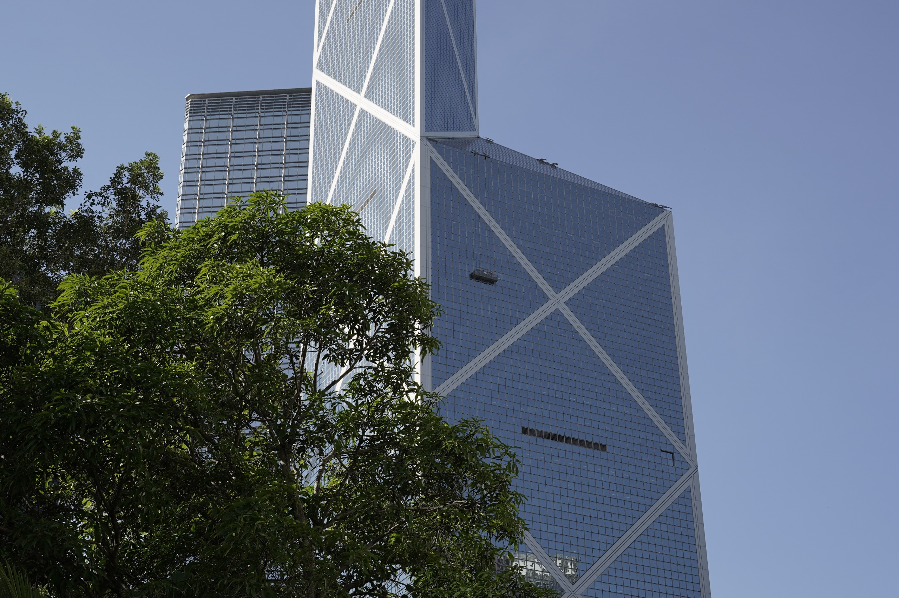
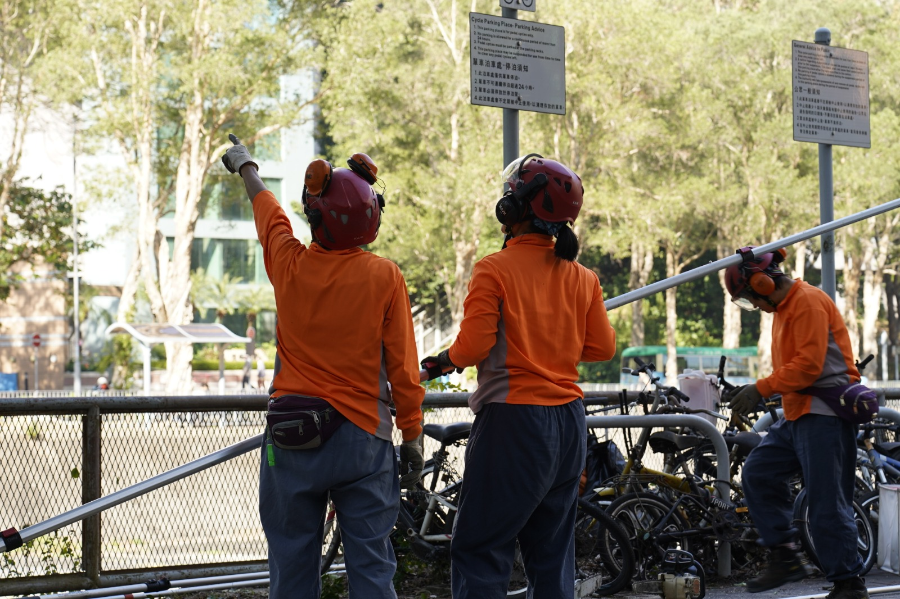
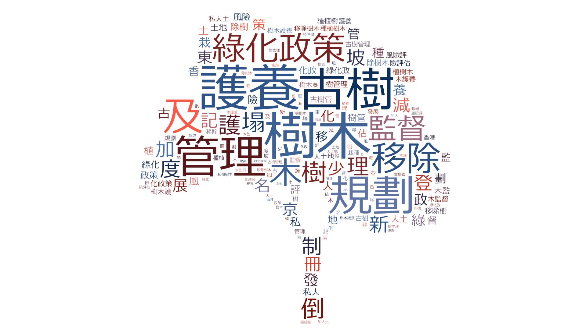
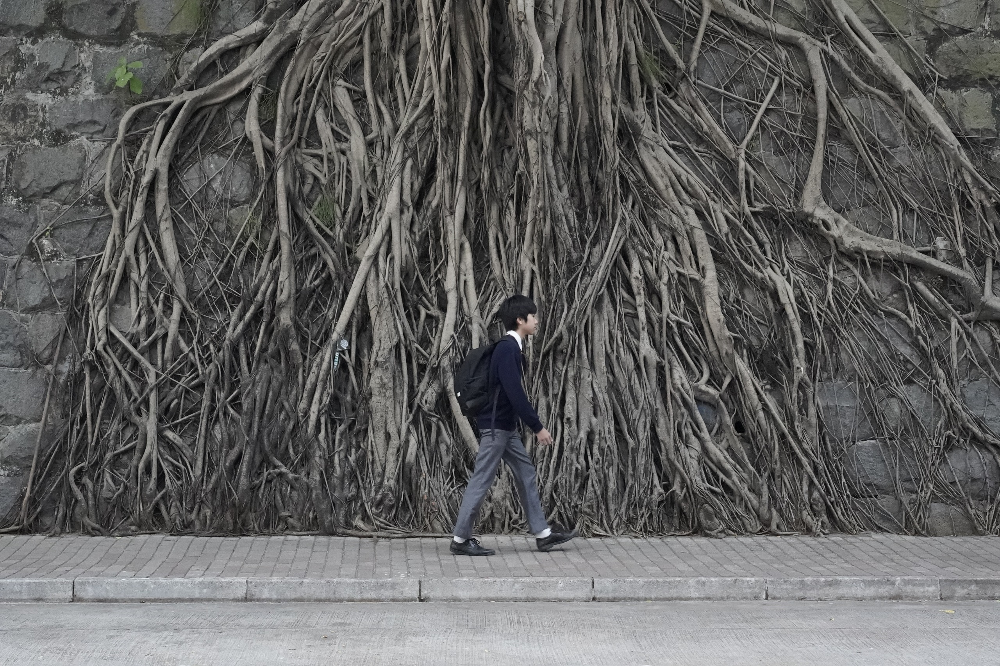

香港樹，你知多少？台風季下的城市樹危機與價值
九月的風未到，樹先「郁」。
中環放工潮，行人路像一條急促的傳送帶。黑西裝、背囊、拖行李箱的人群一波波湧向港鐵入口。街角那排老樹卻不趕時間，樹冠在高樓間的風道裡輕輕擺動，葉片互相摩擦，發出細碎的沙沙聲。你可能只覺得「涼咗少少」，但對樹藝師劉文忠（Lau Noel）而言，這種「未打風已起勢」的晃動，是一種提醒：風季要開始了。
攝：梁浩揚
香港人對「倒樹」的記憶，最深刻的一幕停在 2018 年「山竹」——風暴期間，全港錄得逾 60,000 宗倒樹報告，至今仍是有紀錄以來最多。到了 2025 年 9 月，超強颱風「樺加沙」再次將這段記憶具體化：天文台掛出十號颶風信號，全港多區相繼出現連根拔起或折斷的大樹；政府於當日傍晚已接獲超過 1,200 宗塌樹報告，遍佈筲箕灣、沙田、荃灣、黃大仙等地，不少樹木橫臥道路、壓毀設施，阻塞交通。
其中，愛民邨一棵逾半世紀歷史的印度榕在狂風中傾倒，這棵承載社區情感的老樹倒下，引起居民惋惜；九龍公園亦有古樹被吹至倒伏，其後在政府與社區協力下方能扶正。這些案例與數字像一把尺，把「樹木風險」從抽象拉回現實——它不是「可能」，而是「發生過」，而且一次就可以是城市級別。
「傾斜的樹令人覺得不自然，行近些會見到泥土被撬起、樹根外露；向地下的樹幹在 compression side 會爆皮。枝條破損，也能證明樹木剛受過強風。」
然而對樹藝師劉文忠來說，不能只心痛於結果。作為照看香港樹木的一員，他們要在風後第一時間走到現場，理解大樹為何倒下。他解釋：「颱風後，樹藝師要第一時間去觀察樹木的狀況，在現場分析倒下的原因——是否受風位置、是否地理問題、樹冠是否不平衡、品種結構有沒有弱點。兩星期內出現兩個颱風（樺加沙和麥德姆），破壞力會疊加：第一次把樹木根部同泥土鬆開，第二次更多根部折斷，重心偏移會更大。」
攝：LAU NOEL on 樹藝班同學會@FB
劉文忠做樹二十年，2005 年入行，2008 年考牌，屬於本港「頭幾屆」持政府樹藝師資格的一批專業人士。他估計全港持牌樹藝師約三千人，而他同時亦是香港樹木學會及綠地廣場網站的創立者之一，2003 年畢業於香港都會大學環境研究專業，其後他成為自僱樹木顧問，並在 Facebook 管理擁有超過 4,300 名成員的「樹藝班同學會」，繼續在社群中分享專業。
山頭是森林，市區是石屎森林
從地圖上看，香港並不是一個典型的「大都會」。全港約四成土地屬於郊野公園和特別地區，加上其他鄉郊用地，超過一半以上的土地其實是山林、農地或未發展地。密密麻麻的高樓，只擠在相對狹小的市區範圍內，形成「自然山區 + 高密度城市」並存的獨特格局。

資料來源：2023年 規劃署 香港土地用途
資料來源：2023年 規劃署 香港土地用途
在這個格局之下，香港的樹大致分為兩大類。
一類是城市樹：包括路旁街道樹、公園和休憩用地的樹、公屋屋邨和學校範圍內的樹，以及生長在邊坡和老石牆上的樹。政府八個主要部門合共主動管理約一百六十萬棵樹，其中康文署轄下公園、遊樂場和行人道綠化帶約佔三分之一，路政署與土木工程拓展署則負責接近另一半，主要分布在行車路旁和各類斜坡上。
這些地方你應該不會陌生：巴士站旁那幾棵木棉樹、行人路邊的小葉榄仁、屋邨平台上排排白千層，再加上夾在石牆縫隙裡的榕樹——它們構成我們日常生活中最可見的綠色。
另一類是自然林木：集中在新界丘陵、大嶼山和各區郊野公園。相思、樟樹、土沉香、各式榕樹和灌木構成了次生林，也圍繞著水塘、行山徑，為香港提供了一個遠超城市印象的生物多樣性背景。全港記錄到的維管植物超過三千種，對一個面積如此有限的城市來說，其實相當可觀。
最具香港特色的，是石牆樹——樹根從石砌擋土牆縫隙垂下，與百年老牆纏繞成一幅幅獨有的綠色景觀。早年的調查顯示，全港曾有逾千棵石牆樹，絕大多數都是榕樹，特別是細葉榕。它們既是城市記憶的一部分，也是風險管理最棘手的一群樹。
誰管那塊地，就誰管那棵樹

攝：梁浩揚
康文署於十二月九日派員到大圍香粉寮街美致樓對出位置，修剪轄下管理的樹木枯枝。現在人員郭小姐稱是項目為處理颱風樺加沙後的樹木工程。
「一般先處理狀況危急的樹木，之後才到修整其他未受太大波及的樹木... 全沙田有一萬多棵樹，好難短時間做好全部維修」郭小姐道。
翻查2022年的立法會記錄，路政署與康文署為當時管理最多樹木數量的政府部門，當中康文署有263名具樹藝專業資格的管理人員，而路政署只有49名，平均每名路政署管理人員需管轄近一萬二千棵市區樹木。
資料來源：立法會紀錄
路邊行車道旁的樹，多由路政署或土木工程拓展署負責；行人道、社區公園、小型休憩處，則通常是康文署的地頭；公屋範圍的樹屬房屋署；郊野公園和自然保育區的樹由漁農自然護理署照看；政府建築物四周的樹則是建築署或政府物業署的責任。
再加上水務署、渠務署、地政總署各自管自己工程或官地範圍內的樹，整個系統變成一張拼圖。至於私人物業內的樹，則由發展商、業主立案法團或物管公司負責，土地契約有時會加上「保留樹木」條款，要求不得隨意砍樹。
為了統籌這個高度分散的系統，政府在二〇一〇年代成立了樹木管理辦公室，隸屬發展局轄下的綠化、園境及樹木管理組，負責訂政策、寫指引、建立樹木登記冊和分析倒樹事故。然而，這個辦公室並不直接「養樹」，真正的日常檢查、修剪和處置，仍落在各個執行部門身上。
資料來源：立法會網站 樹木管理辦公室
因此，當市民投訴「樓下那棵樹好危險」時，最常見的情況是：熱線 1823 把個案在不同部門之間轉來轉去，只因為那條路邊行人道、旁邊的斜坡和石牆背後的土地，分屬幾個不同部門和業權。責任愈分散，追問「誰要負責？」就愈困難。
「哪種樹最危險？」
在香港的城市環境中，有幾種情況尤其值得留意。
第一種，是被迫做「淺根樹」的街樹。在狹窄樹坑、全鋪石屎的路面、邊坡薄土層和石牆縫隙中，樹根很難往下扎深，只能在表層泥土橫向蔓延。當颱風吹襲，風力一旦超過根系能承受的範圍，整棵樹就容易「連根翻倒」。木棉、榕樹類、白千層等高大樹種，如果被種在這種極不理想的環境中，風險自然比在寬闊草地或林地中來得大得多。
第二種，是被「錯誤修剪」搞到重心失衡的樹。為遷就電纜、路牌、招牌，或只為「看起來整齊」，有些樹被「削頂」、大幅度偏向一邊修剪，只剩單側樹冠，或整棵變成不自然的「蘑菇形」。這樣的樹在颱風吹襲時，風壓集中在一邊，折斷和傾斜的機會顯著增加。專業指引一再強調要避免粗暴重剪，但在實務上，節省人手和時間的「快刀修剪」仍屢見不鮮。
劉文忠談到「評分」時說得直接。有些樹看似被剪到「剩一枝」，真正問題其實是樹幹仍在腐爛、有洞。「我不是說它剩下一枝，而是它的樹幹還在爛，所以我會評分低一點。」修剪如果只是為遷就設施、求快、求「整齊」，往往會把樹剪成更脆弱的形狀。
第三種，是內部腐朽的老樹。樹幹底部的裂縫、深樹洞、白蟻泥路、長在樹幹上的菇類和木層菌，往往是內部結構受損的警號。這些樹外表仍然枝葉繁茂，但裡面可能已經空心或承托力大降。近年政府開始使用聲波斷層儀、阻力鑽等工具檢測樹幹內部，不靠肉眼「估」，但受資源和人手所限，不可能對每棵街樹都做高成本檢查。
石牆樹：香港最迷人的景觀之一，也是最棘手的「命運共同體」石牆樹的魅力在於「樹與牆共生」，風險也在於此。牆體、排水、背後土壤與根系互相牽連，一出事常常是「牆樹齊倒」。早年研究引述調查，香港曾記錄「505 幅牆上有 1,275 棵樹」的規模，以榕屬最常見。政府亦在 2010 年起設立樹木登記冊，涵蓋古樹名木及石牆樹等資料，讓公眾可查閱。
樹的價值，很多時候先從「心情」開始
即使如此，絕大多數城市規劃專家和環保團體仍然會說：我們不能因噎廢食。問題不在於「有沒有樹」，而是「在什麼地方、用什麼方式種樹」。
從環境角度看，城市樹是重要的基礎設施。夏天日照猛烈時，有樹蔭的街道可以顯著降低體感溫度，讓長者、兒童和戶外工作者不至於在烤熱的石屎路上暴晒。樹冠能截留部分雨水，減緩水流衝擊；樹根穩定斜坡土壤，有助降低山泥傾瀉風險。樹葉又能吸附懸浮粒子、吸收部分二氧化碳和污染氣體，在高密度市區中，樹木是為數不多可以「長期駐守現場」的綠色工具。
從社會與心理健康角度看，樹木帶來的是難以量化但非常真實的「心情紅利」。大量研究指出，住在有樹蔭街道、靠近公園和自然綠地的社區，居民壓力水平較低，抑鬱與焦慮症狀較少，更願意步行、出門和接觸鄰里。對一個節奏急速、樓宇壓迫感強烈的城市來說，一小片樹蔭，就足以改變人對一條街的感受——由「只想快點離開」變成「可以慢慢走」。
在中環返工幾年的 Kit，就用自己每日放工的路，講咗一個好直觀的比較：
「我每日放工行去地鐵站，我都好清楚 feel 到，條街有冇樹，心情真係差好遠……啲純石屎街道，熱到好想即刻衝入商場……但一去到有大樹、有少少綠色嗰段路……個人冇咁燥，甚至會肯慢慢行。」
「我唔希望社會因為驚，就揀最簡單嗰條路，全部砍低……可唔可以種喺啱嘅位置、預留多啲空間、有人好好咁管理？」
Kit 說的「焗」不是錯覺。針對高密度城市的研究指出，城市綠化與樹蔭能改善行人層熱環境。以香港經驗為例，有研究估算，若要把行人層氣溫降低約 1°C，所需綠化規模可達城市面積的相當比例（細節依模型而異，但方向一致）。樹蔭不是裝飾，而是一種「降溫基建」。
「每次打完風見到成街都係倒樹，心入面都會驚下……你話邊個部門管邊棵樹，我真係完全分唔到，淨係知打去 1823，之後就『部門互相轉介』……」
「我又唔想全部樹都被人一刀砍晒，但係安全又真係好重要，所以我都幾希望政府可以講清楚啲……等我哋心入面有個底囉。」
兩段聲音放在一起，就構成香港樹木爭議最真實的底色。想要綠蔭，也想要安全；想要清晰交代，也不想被一句「跟進中」打發。
從「砍不砍」到「怎樣共存」

攝：梁浩揚
劉文忠談到「先導計劃」時，提到一種很香港式的「公平」。他認為若用評分制度挑出高風險樹做試點，不應只靠外區人「講風涼話」，而要看該區居民如何看待風險與樹的感情。他說，你住在那一區，受害者是你，你覺得 OK 就 OK。逐區做，其實可以逐區拿到反應。
而在最實際的層面，他的答案仍回到「right tree right place」。在繁忙街道、人流密集的地方，不是「唔可以有樹」，而是「要種可管理得到的樹」。例如寧願種 15 米左右、可巡查可修剪的中型樹，也不要硬塞 20、30 米的大樹到沒有生長空間的位置。這裡的重點，已經不只是樹木技術，而是城市哲學。
我們願意為一條有樹蔭、可步行、讓人放慢腳步的街，付出多少成本？那可能是更多土壤空間、更多前期規劃、更多專業人手、更多儀器檢測、更多公開解釋與溝通。
也可能是每逢風季來臨，就用最省事的方式，把問題一次過「清空」。
山竹的六萬宗倒樹報告提醒我們，風險是真實的。1823 每年平均約 2.4 萬宗樹木投訴、當中仍有責任爭議拖延，也提醒我們，制度的摩擦同樣真實。
但同時，Kit 的一句「條街有冇樹，心情真係差好遠」提醒我們，樹的價值也是真實的。它不只是一棵植物，而是城市裡少數仍能提供陰影、空氣、喘息位的公共資源。在這個山多樓多、風也多的香港，樹從來不是背景。
有沒有樹、怎樣種樹、出了事怎樣交代，說的其實是我們想住在一個怎樣的城市。